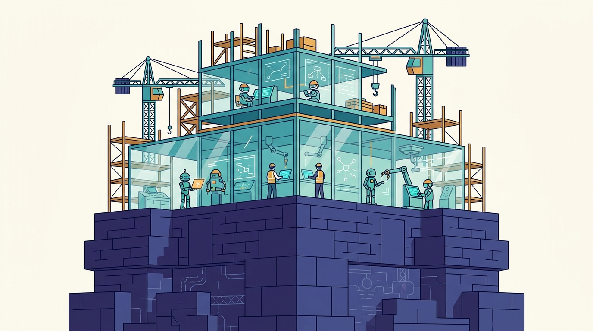

Image generated by Google Gemini (gemini-3-pro-image-preview)
RETROFITTED: How Uber Built AI-Native Engineering on a Decade of Developer Platforms
A case-study journal of Uber's internal AI developer infrastructure — model and tool gateways, the harness layer, skills and the context graph, background agents, self-verification, review and maintenance loops — starting from The Pragmatic Engineer's episode with Uday Kiran Medisetty and widened with Uber's public engineering record. Every chapter asks what Uber built, which pre-AI foundation it stands on, and what a company that is not Uber should copy. This is a living journal and a work in progress: I revise it as I learn more through my work.
No posts match your search.